Appium是一个可用于测试iOS、 Android操作系统和Windows桌面平台原生应用，移动网页应用和混合应用的自动化测试框架。
原生应用（Native App）：用 android、iOS或者Windows SDK编写的应用
移动网页应用（Web App）：通过手机浏览器访问的网页应用，比如iOS中 safari应用，Android上的Chrome应用或者内置浏览器应用，不会占用手机的存储空间。
混合应用（Hybrid App）：同时具备Native App和Web App的特性，一种 webview应用，将Javascript，HTML和CSS执行在embedded webview中，外层用Native App wrapper包起來。
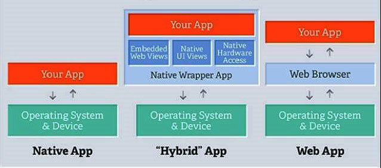
Appium 跨语言支持：Java、 Python、 Ruby、JavaScript (Node.js)、PHP、C# (.NET)、RobotFramework等，Appium是跨平台的，可以用在OSX，Windows以及Linux桌面系统上运行。
Appium架构
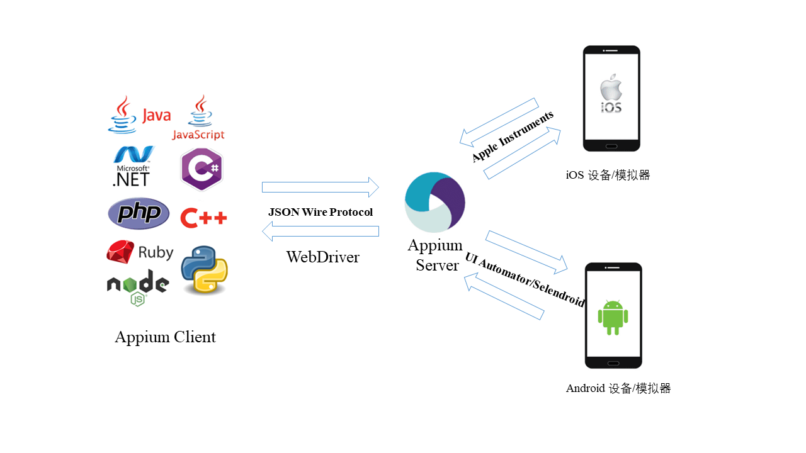
WebDriver
Selenium Webdriver API实现脚本语言与浏览器之间的通信，是一个远程控制接口，可参考Selenium Webdriver 架构。 Webdriver定义的JSON Wire Protocol（JSON有线协议）实现selenium客户端与remote server（浏览器驱动的HTTP服务器）的交互，remote server将命令发送给浏览器，实现浏览器的native调用。
WebDriver协议可参考官方文档：https://w3c.github.io/webdriver/
Appium WebDriver对Selenium Webdriver协议进行了扩展（Mobile JSON Wire Protocol），Appium 客户端通过Webdriver协议与Appium Server进行交互。
Appium引擎列表
为了不重新编译或修改应用，Appium 使用系统自带的自动化框架：
Android 4.3+
- UIAutomator
- UIAutomator2[推荐]
iOS
- UIAutomation (iOS ≤ 9.3)
- XCUITest[推荐] (iOS ≥ 9.3)
Windows:
- WinAppDriver
Appium的设计理念
Client/Server设计模式
Appium采用 C/S架构，Appium与客户端建立连接并监听命令，然后在移动设备上执行这些命令，命令执行结果通过 HTTP 响应的方式返回。客户端通过 WebDriver json wire协议与服务端通讯。由于Appium的这种特性，我们可以将Appium server放在与测试机不同的机器上。Appium Server是使用 Node.js 编写的HTTP服务。
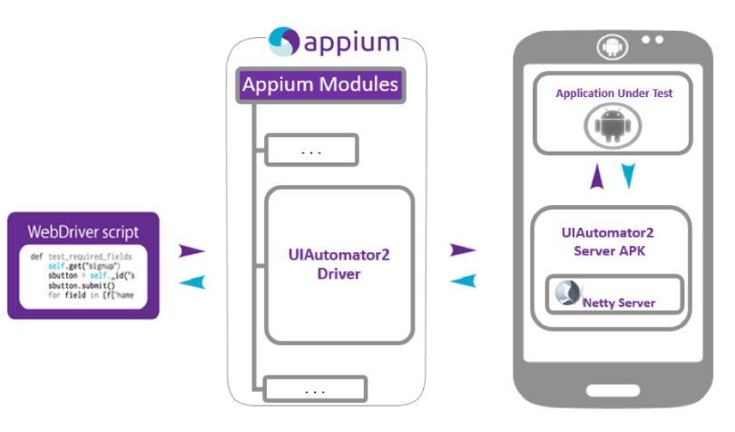
session 会话
Appium自动化执行时会首先拉起一个session会话，客户端和服务器之间初始化一个session，通过发送一个POST /session建立连接，客户端的post请求中携带一个称为 ‘desired capabilities‘ 的JSON对象，定义设备平台（iOS或Android）、版本、server地址等请求字段，后面的文章将详细介绍。服务器接收到请求后会建立一个session并回应一个session ID，建立好连接后就可以发送命令了。
Appium Clients
Appium支持多语言，包括Java, Ruby, Python, PHP, JavaScript, 和 C#，这些客户端库支持WebDriver 协议扩展。
| 语言/框架 | Github仓库地址 |
|---|---|
| Ruby | https://github.com/appium/ruby_lib, https://github.com/appium/ruby_lib_core |
| Python | https://github.com/appium/python-client |
| Java | https://github.com/appium/java-client |
| JavaScript (Node.js) | https://github.com/admc/wd |
| JavaScript (Node.js) | https://github.com/webdriverio/webdriverio |
| JavaScript (Browser) | https://github.com/projectxyzio/web2driver |
| Objective C | https://github.com/appium/selenium-objective-c |
| PHP | https://github.com/appium/php-client |
| C# (.NET) | https://github.com/appium/appium-dotnet-driver |
| RobotFramework | https://github.com/serhatbolsu/robotframework-appiumlibrary |
Appium工作原理
- 首先开启Appium server，它会默认监听4723端口
- appium客户端（测试脚本）基于Json wire protocol发送设备信息给Appium server，请求创建session。其中设备信息放在desired capabilities中，包括系统平台，版本，应用等信息（详细介绍参考App控件定位）。session用于保存设备配置信息。
- Appium server创建session id并返回给client：appium server调用AndroidDriver为client生成一个session并且生成一个与此session相关联的session id，作为client与server之间通信的唯一标识。
- 开启bootstrap socket服务器：Appium在初始化时将中间件Bootstrap.jar推送到设备，bootstrap是uiautomator的测试脚本，继承于UiautomatorTestCase。手机端通过该脚本监听端口4724，appium server作为socket-client端通过4724端口将请求发送给socket服务器（bootstrap.jar），然后bootstrap将appium命令转换成uiautomator命令。
连接建立完成后，Appium client基于Json wire protocol通过4723端口将指令发送给Appium server，Appium server（socket-client）通过4724端口转发给中间件bootstrap.jar（socket-server），bootstrap.jar将请求转换成UiAutomator可以识别的命令，发给UiAutomator对设备进行操作。执行完操作后将执行的结果返回给Appium server，Appium server返回给Appium客户端，客户端对结果做校验。
Appium生态工具
adb：android的控制工具，用于获取 android的各种数据和控制
Appium Desktop：内嵌了 appium server和inspector的综合工具
Appium Server：appium的核心工具，命令行工具
Appium client：各种语言的客户端封装库，用于连接 appium server
AppCrawler：自动遍历工具
appium使用 appium-xcuitest-driver来测试iPhone设备,其中需要安装 facebook开发的WDA(webdriver agent)来驱动iOS测试，下面介绍Android APP测试环境安装。
Appium环境安装
- Java1.8版本
- Android sdk
- Node.js(>=10 版本)，npm(>=6 版本)
- Python3
- Appium-desktop
- Appium python client
1、安装Node.js
- Node.js 是一个基于 Chrome V8 引擎的 JavaScript 运行环境
- Node.js 使用了一个事件驱动、非阻塞式 I/O 的模型，使其轻量又高效。
- 是运行在服务端的 JavaScript
https://nodejs.org/en/download/
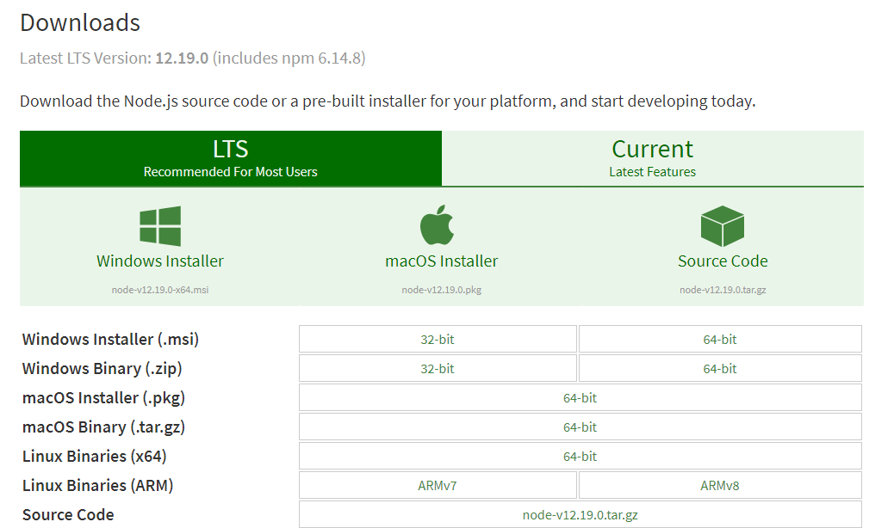)
命令行窗口中运行node -v 查看是否安装成功
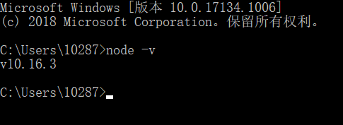
2、安装jdk
jdk下载下载地址：
https://www.oracle.com/technetwork/java/javase/downloads/jdk8-downloads-2133151.html
按照默认路径安装
配置环境变量
“我的电脑”右键菜单—->属性—->高级—->环境变量—->系统变量—>新建
- 变量名：JAVA_HOME
变量值：C:\Program Files (x86)\Java\jdk1.8.0_144 - 变量名：CALSS_PATH
变量值：.;%JAVA_HOME%\lib\dt.jar;%JAVA_HOME%\lib\tools.jar;
找到path变量名—>“编辑”添加：
- 变量名：PATH
变量值：%JAVA_HOME%\bin;%JAVA_HOME%\jre\bin;
查看是否安装成功：java -version
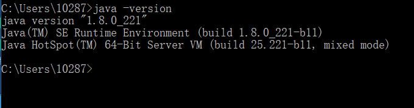
3. 安装Android SDK
Android SDK是Google提供的Android开发工具包，在开发Android应用的时候会用到，需要通过引入工具包来调用Android的API
下载地址：https://developer.android.com/
中文社区的SDK下载地址：
http://tools.android-studio.org/index.php/sdk
双击打开SDK Manage.exe，安装API版本和对应的工具包，这些在运行模拟器和真机测试的时候会使用到。
配置环境变量
新建环境变量ANDROID_HOME，变量值为sdk的路径：E:\Android\android-sdk
“我的电脑”右键菜单—->属性—->高级—->环境变量—->系统变量—>新建
- 变量名：ANDROID_HOME
变量值：D:\android\android-sdk-windows
找到环境变量path—>“编辑”添加：
- 变量名：PATH
- 变量值：;% ANDROID_HOME%\platform-tools;
- 变量值：% ANDROID_HOME%\build-tools;
- 变量值：% ANDROID_HOME%\tools;
tools目录下运行android命令，platform-tools目录运行adb命令
检验Android SDK是否安装成功：adb version
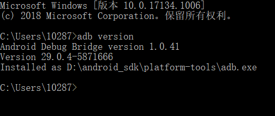
4. 安装Appium
下载地址：https://bitbucket.org/appium/appium.app/downloads/?tab=downloads
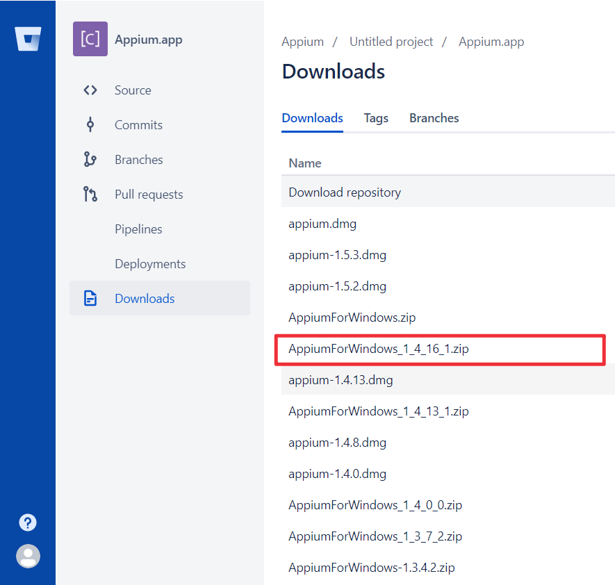
- 安装完成后添加到环境变量
- 把安装的appium文件夹的Appium\node_modules.bin加到系统环境变量path中
运行appium-doctor，检测appium运行环境的工具
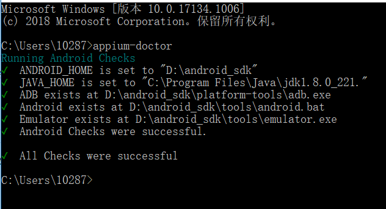
5. 安装appium-desktop
下载地址：https://github.com/appium/appium-desktop/releases/tag/v1.15.1
6. 下载Appium-Python-Client
下载链接：https://pypi.org/project/Appium-Python-Client/
运行python setup.py install安装
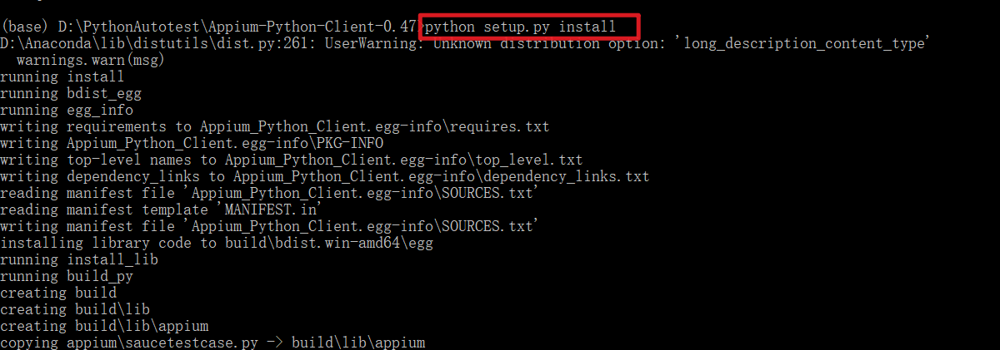
或者运行 pip install Appium-Python-Client 安装。
appium测试
下面来测试一下是否能够进行 Android APP自动化测试
测试APP使用appium提供的测试APP: android-apidemos，它是从Google的Android ApiDemos fork过来的。
下载成功后安装到测试机：adb install ApiDemos-debug.apk
1. 启动appium
IP和端口号默认就行（如果你的appium server不在本地，IP地址需要填写appium所在的主机IP地址），点击Start Server：
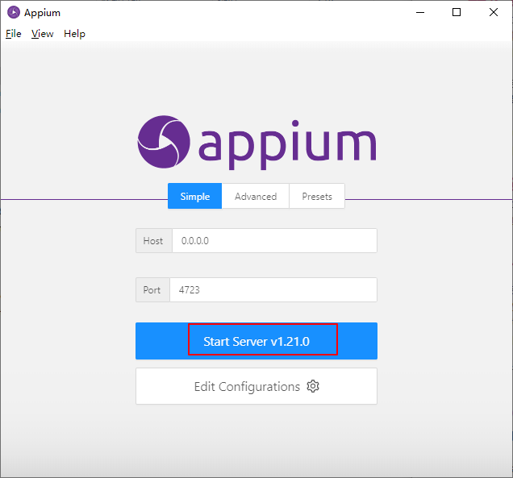
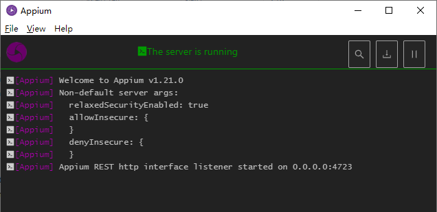
可以看到appium server已经启动，这个窗口会显示appium server运行日志。
windows中使用手动方式打开appium比较麻烦，可以使用bat脚本来启动appium：
1 | @echo off REM 回显到控制台上 |
main.js位于Appium安装路径下
--address：appium server地址--port：端口号--log-level：日志级别，可设置4种—debug,info,warn,error--log：保存日志- 更多appium server参数设置可参考：https://appium.io/docs/en/writing-running-appium/server-args/
注意命令之间用 & 隔开。
&、&&和||区别
- cmd1 & cmd2 & cmd3：无论前面的命令是否执行成功，后面的命令都会执行
- cmd1 && cmd2 && cmd3：如果前面的命令执行失败，退出，后面的命令不会执行。
- cmd1 || cmd2 || cmd3：前面的命令执行成功就退出，不会执行后面的命令。
2. 手机USB连接电脑
adb devices命令查看手机是否连接成功
1 | $ adb devices |
3. 编写测试脚本
1 | from appium import webdriver |
使用pytest命令执行测试脚本：
1 | $ pytest test_apidemos.py::TestApidemos::test_appium |
参考文档
WebDriver协议：https://w3c.github.io/webdriver/
Mobile JSON Wire Protocol：https://github.com/SeleniumHQ/mobile-spec/blob/master/spec-draft.md
本文标题:App自动化测试 | Appium 介绍及环境安装
文章作者:hiyo
文章链接:https://hiyongz.github.io/posts/appium-install-and-architecture/
许可协议:本博客文章除特别声明外，均采用CC BY-NC-ND 4.0 许可协议。转载请保留原文链接及作者。